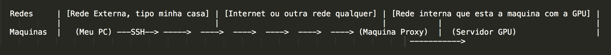
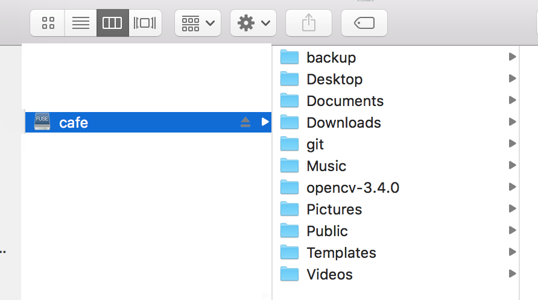
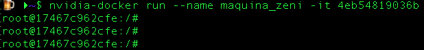
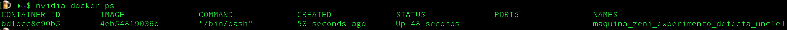
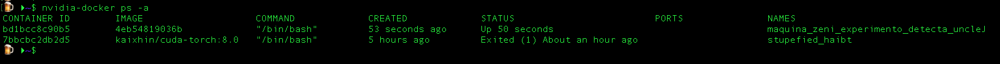

Acesso remoto à um servidor Linux com suporte a GPU e Docker
Contribuições são bem-vindas. Sugira melhorias, typos, me de bitcoins!
Este tutorial é uma tentativa de registrar as coisas (comandos, artimanhas e mutretas) mais "básicas" para acessar remotamente um servidor Linux que tenha suporte a GPU e Docker. Observe que eu não vou entrar em detalhes de como instalar e configurar tal ambiente.
O Tutorial está separado em duas seções:
- Como fazer o acesso remoto com tunnelamento e montar uma pasta para acessar os arquivos no server
- Como usar o Docker em conjunto com a GPU
Acesso remoto ao servidor
Tentarei listar o que acho necessário para se concectar "confortávelmente" em um server Linux remoto usando SSH. Na verdade depois que tu te acostuma a trabalhar com estas ferramentas tu estranha ter que trabalhar "localmente" novamente. Hoje meu notebook não fica mais fervendo, quem sofre esmagando os dados é o servidor. É provavel que algumas explicações sejam omitidas ou (i) porque eu sou preguiçoso; ou (ii) porque esqueci de fazê-lo.
Acessar SSH dentro de uma mesma rede usando Linux é trivial e não irei entrar em detalhes para este tipo de acesso. Aqui iremos discutir um contexto um pouco mais complexo em que existe uma máquina de ponto de entrada para a rede (chamaremos de Máquina Proxy aqui). Em resumo, a máquina Proxy permite que computadores de redes externas se conectem de alguma forma à rede interna. Esse tipo de conecção, pode ser, por exemplo, acessar algum serviço de intranet, FTP, ou fazer SSH para uma máquina dentro da rede que não tem acesso externo pelas portas necessárias.
No nosso caso, queremos acessar o precioso servidor com GPU a partir de outra rede. O problema é que o servidor com GPU não tem acesso a porta 22 da rede. portanto, tem que passar pela máquina proxy. "Graficamente queremos fazer o seguinte:

Criando um túnel
Uma funcionalidade útil do SSH é que ele permite criar túneis. Neste caso, vamos criar um túnel de uma porta do (Meu PC) para uma porta no (Servidor GPU), e claro, isso é possível graças a (Máquina Proxy).
Para abrir um túnel usamos o seguinte arranjo de comandos com o SSH:
$ ssh -f -N -X -L [porta no (Meu PC)]:[ip ou nome do (Servidor GPU) na rede interna]:[porta destino no (Server GPU)] [teu usuario na (Máquina Proxy)]@[Endereço da (Máquina Proxy)]
Exemplo concreto:
$ ssh -f -N -X -L 5005:server_gpu:22 fulano@portal.inf.ufrgs.br
Basicamente estamos dizendo para o SSH: monta um túnel a partir da porta 5005 da minha máquina local para a porta 22 (SSH) da máquina server_gpu. Tu vais ter que passar pela máquina portal.inf.ufrgs.br (Máquina proxy) usando o usuário fulano.
É bom resaltar que não necessariamente o teu usuário vai ser o mesmo na máquina server e na máquina proxy.
Bacana, temos um túnel. Aquele monte de opções com - na frente indicam que não é para abrir um terminal bash, criar um túnel e que seja possível renderizar janelas remotamente usando servidor X via SSH.
Acesso ao bash via SSH
Como temos o túnel, basicamente para acessar o terminal da (Servidor GPU) fazemos o seguinte:
ssh -Y -p [porta no (Meu PC) do túnel] [usuário no (Server GPU)] @localhost
Exemplo concreto:
ssh -Y -p 5005 aninha@localhost
Lindo, 😭, conseguimos conectar pela porta 5005 do (Meu PC) lá no (Servidor GPU) via SSH através da máquina Proxy.
Facilitando o acesso aos arquivos
Quem já sofreu fazendo SCP sabe a chatice que é, SCP vai, SCP vem... Uma solução para isso é utilizar o SSHFS, ou seja, file system over SSH 🤩. Com isso é possível criar uma pasta no (Meu PC) que replica os arquivos de alguma pasta do (Servidor GPU). Assim podemos enviar e copiar os arquivos de forma mais simples e usando o navegador de arquivos com GUI.
Eu gosto bastante dessa solução pq permite, por exemplo, que eu edite o código no (Server GPU) usando o sublime e posso usar o Finder no OSX para manipular os arquivos/
Para montar a pasta vamos usar o túnel novamente =)
sshfs -p porta de entrada do túnel -o allow_other user na máquina desejada@localhost:path na máquina desejada onde vai ser montado no teu pc
Exemplo concreto:
sshfs -p 5005 -o allow_other joao@localhost:/home/joao /home/joao/server_gpu
E se tudo der certo, no (Teu PC) agora deve ter uma pasta com os arquivos lá do (Servidor GPU)
Exemplo (montado no OSX):

B R U X A R I A
Se tu fores usar as 3 etapas, eu sugiro rodar na ordem: túnel, SSHFS, SSH. Na real, faz um .sh por favor! 😉
Utilizando Docker com GPUs Nvidia
O Docker é uma ferramenta para empacotar, distribuir e rodar qualquer tipo de aplicação dentro de um container. Um container é independente de hardware e plataforma, então tu não tens mais aquela desculpa de "na minha máquina funciona" hehe. O bacana é que não temos que nos preocupar se o código que estamos criando vai deixar de rodar, por exemplo no server de produção.
No contexto onde se usa GPUs para esmagar dados, por exemplo, aqui no nosso lab de visão computacional na UFRGS é interessante usar o Docker para isolar os ambientes e compartilhar hardware (GPUs são caras). Mas o que é isolar um ambiente? Imagina o seguinte, eu estou usando Cuda 9 com cuDNN 7, Tensor Flow, OpenCV 3.4 e Python 3. Meu colega do lado, que usa o mesmo server, ta usando Cuda 8, cuDNN 5, Torch, OpenCV 2.4 e Python 2. Se não isolarmos estes ambientes vai dar caca, ou pior, se eu fizer caquinha no meu ambiente, vai repercutir no ambiente do meu colega. Portanto, o Docker pode ser usado para dar essa segurança de ninguém estragar o ambiente de ninguém quando se compartilha uma máquina. E tu também pode fazer uns testes mais "vida loca" já que qualquer coisa é só subir uma nova imagem.
Uma imagem
Uma imagem no Docker é como se fosse um template para uma máquina, que vai ter as libs que tu precisa, os programas, as configurações e etc. O interessante é que uma vez que se tem a imagem da máquina você pode criar um container dela em qualquer lugar, e esse container vai sempre reproduzir a imagem que deu origem a ele =)
Container
Eu não sei explicar isso direito, mas minha melhor interpretação é que um container é uma instância de uma imagem Docker que pode, ou não estar rodando atualmente.
Como eu crio minha própria imagem Docker?
Não sei. :)
Como baixar imagens das internets
Uma coisa legal é que existem repositórios de imagens Docker com varios setups já pré configuras. "Ah, tu quer usar Ubuntu 14.4, Cuda 6.0 cuDNN 4. De boas veio, ta aqui a imagem, é só dar um pull e usar ai". Exemplo disso é o Docker Hub.
Interagindo com o Docker
Sempre vamos interagir com o o Docker e suas imagens, containers e etc. usando o comando "docker" 🤪🤪. Entretanto, para termos suporte ao hardware da NVIDA temos que usar o nvidia-docker (versão Docker da Nvidia que deixa usar a GPU dentro de um container). (Sugiro que tu crie um alias para o nvidia-docker no teu .bashrc. Eu, ao menos, acho um saco ficar escrevendo essa coisa toda hora 😑).
Listando as imagens já instaladas no Docker do servidor
nvidia-docker images
A saída vai ser algo assim:
REPOSITORY TAG IMAGE ID CREATED SIZE
nvidia/Cuda 9.2-cuDNN7-devel-Ubuntu18.04 4eb54819036b 2 weeks ago 2.92GB
nvidia/Cuda latest e2728e6295c6 2 weeks ago 1.96GB
Ubuntu latest 113a43faa138 6 weeks ago 81.2MB
Como podemos ver, temos uma imagem que é só Ubuntu, outra que é com Cuda basicão (nao lembro bem as specs) e temos uma imagem que é bem explicita Cuda 9.2 cuDNN7 para developers montada no ambiente do Ubuntu 18.04. (🤟🏼)
Iniciando um container a partir de uma imagem
Para inicializar um container a partir de uma imagem é muito tranquilo:
nvidia-docker run --name nome da instancia -it IMAGE ID bash
Exemplo concreto:
nvidia-docker run --name máquina_zeni_experimento_detecta_uncleJ -it 4eb54819036b
SEMPRE INSTACIE UM CONTAINER USANDO o --NAME E DANDO UM NOME QUE FAÇA SENTIDO!
Como várias pessoas podem estar usando a mesma máquina, pode virar uma bagunça e ninguém mais sabe de quem é o container tal...
Minha politica como ADM do server: Container mal identificado e não acessado a mais de 7 dias é assassinado. 🔪⚰️
E, se tudo der certo, temos acesso a um ambiente Docker como Root =):

Uma instancia de um container vai sempre existir após a sua instanciação (criação), portanto, não é necessário criar instancias novas toda vez que você desejar usar o docker. Na realidade, se você fizer isso não irás manter os arquivos da instância anterior.
Reiniciando um container criado previamente
$ nvidia-docker start -ai ID INSTANCIA
Como saber a id da tua instância? ⏬
Listando os containers que estão rodando
$ nvidia-docker ps
Exemplo dos containers rodando:

Listando todos os containers que existem
$ nvidia-docker ps -a
Exemplo de todos os containers existentes:

Dando pull de uma imagem de um repositório
Você pode fazer o download de uma imagem contendo as features desejadas em diversos repositórios, como por exemplo o Docker Hub.
Um exemplo real: suponha que se quer uma imagem com CUDA + cuDNN v5 + Torch 7 em ambiente Linux (neste caso Ubuntu 14.04). Após pesquisar no Docker Hub, encontramos este link: https://hub.docker.com/r/kaixhin/cuda-torch-mega/.
Para dar um pull e instalar essa imagem na máquina desejada, digita-se:
$ docker pull kaixhin/cuda-torch-mega
Uma coisa legal do Docker Hub é que, além de centralizar toda sorte de imagens, ainda há espaço para o fornecedor descrever e explicar o funcionamento do ambiente em questão.
O comando de docker pull, como o do exemplo acima, é sempre fornecido nessas páginas.
Removendo um Container
Tenha cuidado!
$ nvidia-docker rm ID_CONTAINER
Pessoas que contribuiram com este documento de alguma forma 😃 (agradecimentos):
Thiago Trugillo (Na parte do docker e typos deste documento)
Serião (Por me ensinar a montar tunneis e sshfs)